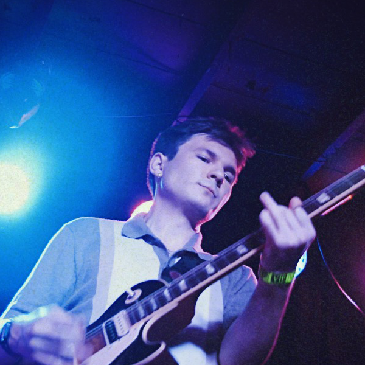
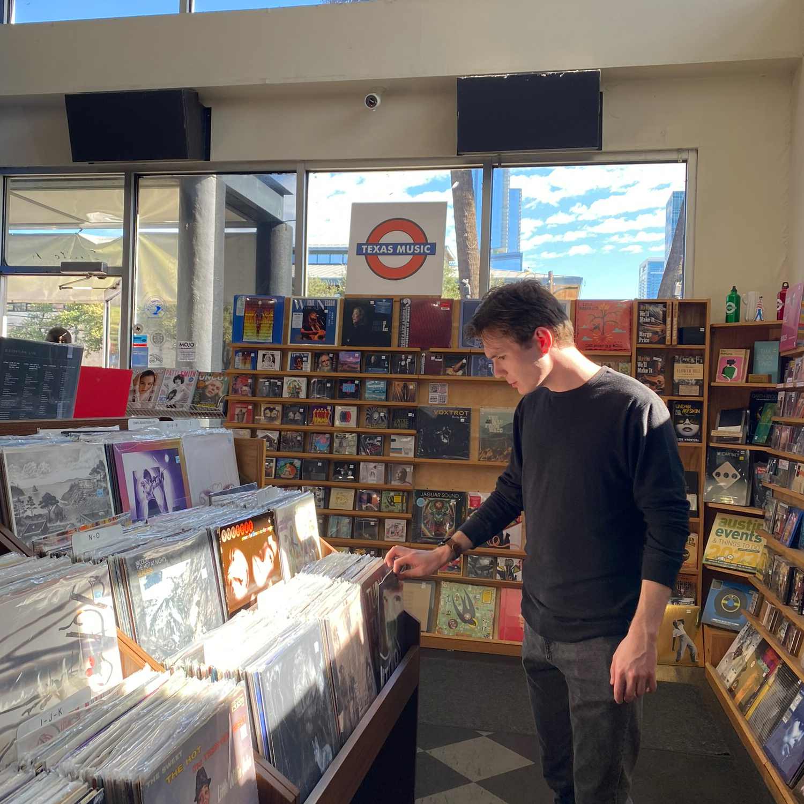
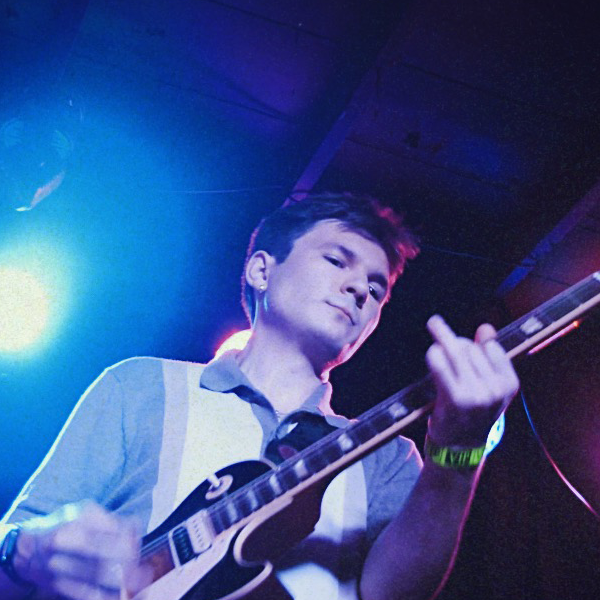
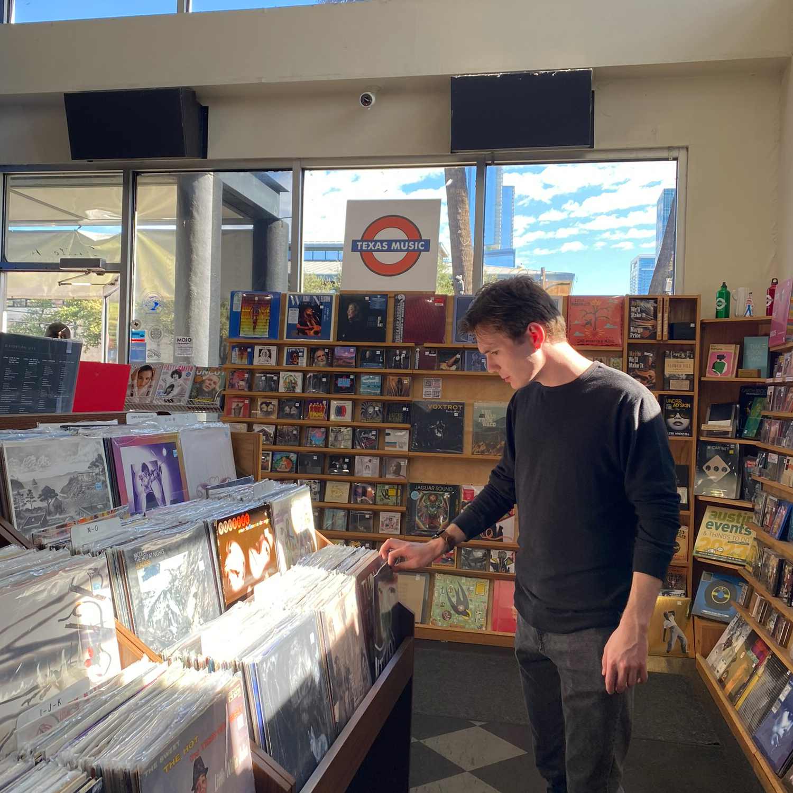

I aim for excellence both in and out of the classroom as a dedicated student at the University of Texas at Dallas. I'm looking forward to what my education has in store for me, and I'm willing to put in the effort and aim for excellence in all I do. I understand how to adapt to change and overcome obstacles via collaborative and problem-solving efforts as a well-rounded student. My passion drove me to my first job as a Code Ninjas Sensei when I was 16 years old. Since then, I've pursued ambitious projects in order to improve my software development experience. I've always been willing to approach new challenges, whether it's making websites for local businesses over the summer, working on Minecraft mods for an indie game studio, or contributing to open source projects hosted on GitHub. I plan to work towards a career as a software engineer by honing my programming and teamwork abilities over my four years at the Erik Jonsson School of Engineering and Computer Science.

 


